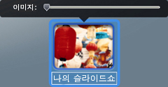
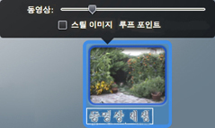

이미지 단추 상의 이미지를 변경하려면,
하나의 사진 또는 동영상이 있는 슬라이드쇼 단추에서 기본 이미지를 대치할 수 있습니다.
미디어 패널에 있는 사진이나 동영상 클립을 더하기 기호가 있는 녹색 원이 보일 때까지 부메뉴 단추로 드래그하십시오. 사진 또는 동영상 클립이 단추에 나타나며, 슬라이드쇼에도 추가됩니다. 슬라이드쇼 단추의 축소판 부분을 이중 클릭하면, 이미지 슬라이더(아래 참조)가 단추 위에 나타납니다. 슬라이더를 이동하여 다른 이미지를 선택하여 단추에 표시할 수 있습니다.
사진 또는 동영상 클립을 슬라이드쇼 자체가 아닌 단추에 추가하려면 Command 키를 누른 채로 항목을 단추로 드래그하십시오. 이 경우에는 이미지 슬라이더를 사용하여 단추에 표시될 이미지를 변경할 수 없습니다.

하나의 사진 또는 다른 동영상 클립이 있는 동영상 단추에 표시되는 이미지를 대치할 수 있습니다.
사진을 추가하려면, 사진 패널에 있는 이미지를 더하기 기호가 있는 녹색 원이 보일 때까지 단추로 드래그하십시오.
단추가 링크되어 있는 동영상과 다른 동영상 클립을 추가하려면, Command 키를 누른 채로 동영상 패널에 있는 동영상을 드래그하십시오.
단추에 표시할 동영상의 프레임을 변경하려면, 단추의 이미지 부분을 이중 클릭하십시오. 나타나는 동영상 슬라이더를 사용하여 새로운 프레임을 선택하십시오(아래 참조). 스틸 이미지 체크상자를 선택하면 동영상 클립을 재생하는 대신에 단추가 선택한 프레임을 스틸 이미지로 표시합니다.
중요: Command 키를 누른 채로 단추에 동영상을 드래그하면 새로운 동영상이 단추가 링크되어 있는 미디어 항목으로서 기존 동영상을 대치합니다.

하나의 이미지 또는 하나의 동영상 클립이 있는 부메뉴 단추에서 이미지를 대치할 수 있습니다.
미디어 패널에 있는 하나의 이미지나 동영상 클립을 더하기 기호가 있는 녹색 원이 보일 때까지 부메뉴 단추로 드래그하십시오.
동영상 클립을 추가할 때, 단추의 이미지 부분을 이중 클릭하고 동영상 패널에서 슬라이더를 움직여서 단추에 표시되는 프레임을 선택할 수 있습니다. 스틸 이미지 체크상자를 선택하여 단추에 동영상의 선택한 프레임만 표시할 수 있습니다.